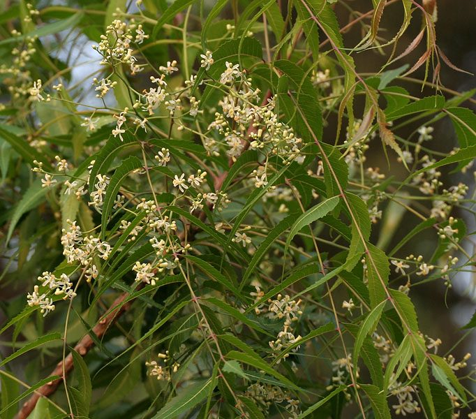

नीमNeem
Azadirachta indica · Meliaceae · FLR-0009

- Scientific name
- Azadirachta indica A.Juss.
- Family
- Meliaceae
- Hindi
- नीम
- Status here
- native
- IUCN
- not evaluated
When to look कब देखें
Present all year.
नीम / Neem
Azadirachta indica A.Juss. — Meliaceae
नीम — यदि पीपल आस्था और अध्यात्म का प्रतीक है, तो नीम हमारे ग्रामीण परिवेश का प्राकृतिक औषधालय (दवाखाना) है। पूर्वी उत्तर प्रदेश का प्रत्येक गाँव दाँतुन से लेकर कीटनाशक तक, और बुखार के घरेलू उपचार से लेकर कीड़ों से अनाजों की रक्षा तक — हर चीज़ के लिए इसी पर निर्भर रहता है। यह पेड़ हज़ारों वर्षों से मानव बस्तियों के निकट फल-फूल रहा है और स्थानीय जैव-विविधता का एक अत्यंत मजबूत स्तंभ है।
Quick Identification त्वरित पहचान
| Feature | Description |
|---|---|
| Size & Crown | Medium to large semi-evergreen tree (15–20 m tall) with a dense, rounded, spreading canopy |
| Leaves | Alternate, compound pinnate (20–40 cm long) with 9–17 lance-shaped, sharply toothed leaflets; base of each leaflet is distinctly asymmetric |
| Flowers | Small, fragrant, star-shaped white-to-cream flowers (5–6 mm across) in large branched axillary clusters |
| Fruit | Smooth, olive-shaped drupe (1–2 cm long), green ripening to a bright yellow with sweetish-bitter pulp |
| Bark | Dark grey-brown, rough, deeply furrowed with long vertical fissures on mature trunks |
| Aroma | Pungent, bitter, medicinal aroma when leaves, twigs, or bark are crushed |
Field tip: Any medium-to-large tree in a village setting with pinnately compound leaves, where the leaflets have sharply saw-toothed margins and a highly asymmetric base (one side of the leaflet base is larger/broader than the other), is Neem. The strong bitter medicinal smell when leaves are crushed is diagnostic.
Morphology आकारिकी
Biometrics (typical measurements in the Gangetic plain):
| Feature | Measurement |
|---|---|
| Tree height | 15–20 m |
| Compound leaf length | 20–40 cm |
| Leaflet length | 3–8 cm |
| Leaflet width | 1–3 cm |
| Fruit (drupe) length | 1.0–2.0 cm |
Habit: Medium to large deciduous to semi-evergreen tree, 15–20 m tall (occasionally to 30 m). Crown dense, rounded, spreading 5–8 m in diameter. Often multi-stemmed from the base in older village trees.
Bark: Young trees smooth, greenish-grey. Mature bark dark grey-brown, rough, deeply furrowed with long vertical cracks. Inner bark orange-brown.
Leaves: Alternate, compound pinnate, 20–40 cm long. Leaflets 9–17 (usually 13–17), lance-shaped, 3–8 cm long, 1–3 cm wide, sharply serrate (toothed), with a distinctly asymmetric base — one side of the leaflet base is broader than the other. Leaves deep green, glossy above.
Flowers: Small, 5-petalled, white to pale yellow, in large axillary panicles (clusters) 10–25 cm long. Appear February–April, often before or with new leaves. Extremely fragrant — a whole neem in flower scents the air for metres.
Fruit: Drupe (stone fruit), 1–2 cm long, ellipsoid (olive-shaped). Skin thin, green ripening to yellow when ripe. Pulp fibrous, sweetish-bitter. Hard inner stone contains 1–3 seeds rich in neem oil.
हिंदी: संयुक्त पत्तियाँ — पत्रकों का जड़ पर असमान होना नीम की पक्की पहचान है।
फूल फरवरी–अप्रैल: सफेद, छोटे, बहुत खुशबूदार।
फल: जैतून जैसा, पीला होने पर मीठी गंध।
Azadirachtin — The Biopesticide एज़ाडिराक्टिन — प्राकृतिक कीटनाशक
The reason neem is globally famous is a single molecule: azadirachtin, a triterpenoid concentrated in the seeds.
How it works: Azadirachtin is a feeding deterrent, growth disruptor, and reproduction inhibitor for insects. It does not kill directly — instead it:
- Blocks the insect's ability to moult (shed its exoskeleton to grow)
- Disrupts hormones that trigger egg-laying
- Makes leaves and fruits unpalatable to feeding insects
What it doesn't do: Azadirachtin has very low toxicity to mammals, birds, earthworms, and beneficial insects like bees and adult butterflies (it affects chewing insects far more than sucking insects).
In village practice: Neem-based pesticides have been used in UP agriculture for generations — leaves burned to repel mosquitoes, seed cake dug into soil to control nematodes, leaf decoction sprayed on crops. Commercial neem-based biopesticides are now sold alongside synthetic chemicals.
The irony: International chemical companies patented neem derivatives in the 1990s, leading to a decade-long legal battle. India ultimately secured rights to traditional neem use.
हिंदी: Neem seeds contain azadirachtin, which disrupts insect growth and feeding. It is safe for most non-target species. Traditionally used in UP for pest control and crop protection.
Ecological Role पारिस्थितिक भूमिका
Fruit food source: Neem fruits are eaten by many birds — especially Common Myna, Rose-ringed Parakeet, Asian Koel, and various babblers — when yellow and ripe in May–July. Fruit bats also consume them. These birds and bats disperse seeds.
Insect host: Despite its chemical defences, several specialist insects use neem. The neem leaf webber moth (Loophole sp.) and various scale insects exploit neem. The Giloy climber (Tinospora cordifolia) grows on neem, and neem-grown giloy is considered medicinally superior in Ayurvedic tradition.
Roosting tree: Dense canopy used by many birds for night roosting — mynas, parakeets, crows. Also used by Small Indian Mongoose (Herpestes edwardsi) as a hunting perch base.
Soil: Neem leaf litter is decomposed slowly due to the chemical load, which modifies soil chemistry beneath the tree. Neem cake (seed residue after oil extraction) is a nitrogen-rich soil amendment also with nematicidal properties.
Microclimate: Neem canopy is denser than peepal, casting strong shade. In summer, ground under neem is a reliable cool refuge — village cattle, dogs, and people all use this shade.
हिंदी: नीम के फल मई–जुलाई में मैना, तोता, कोयल खाते हैं।
नीम पर गिलोय चढ़ती है — यह जोड़ी पारिस्थितिक और औषधीय दोनों रूप से महत्वपूर्ण है।
घनी छाँव — गर्मियों में पशु-पक्षी और इंसान सब यहाँ बैठते हैं।
Life Cycle / Phenology जीवन चक्र
- Germination: Seeds germinate readily after birds or bats disperse them; also propagated by cuttings and nursery stock
- Growth rate: Moderate to fast — can reach 5–7 m in 5 years under good conditions
- Lifespan: 150–200 years (much shorter than peepal)
- Leaf flush: New leaves emerge February–March, often bronze-green; semi-evergreen in most of UP (may drop briefly in very dry winters)
- Flowering: February–April (one of the earliest-flowering trees in eastern UP)
- Fruiting: May–July; a single mature tree can produce 50,000+ fruits per season
- Seed viability: Short — seeds lose viability within weeks of falling; dispersal agents critical
हिंदी: नीम तेज़ी से बढ़ता है — 5 साल में 5–7 मीटर।
जीवनकाल 150–200 साल।
फरवरी–अप्रैल में फूल, मई–जुलाई में फल।
एक पेड़ एक साल में 50,000 से अधिक फल दे सकता है।
Agricultural / Human Relevance कृषि और मानव संबंध
As a biopesticide:
- Neem oil sprays: effective against aphids, whiteflies, mealybugs
- Neem seed cake: incorporated into soil, kills root nematodes, adds nitrogen
- Leaf burning: traditional mosquito repellent
- Commercial products: Neemark, Achook, Nimbicidine — all neem-derived, widely sold in UP markets
Medicinal uses (traditional/Ayurvedic):
- Twigs as datun (toothbrush): antimicrobial compounds clean teeth and harden gums — used across rural UP daily
- Leaves: fever, skin conditions, malaria (internal use — not without risk)
- Bark decoction: diabetes, skin ulcers
- Seed oil: skin infections, lice, traditional hair oil base
- Leaf paste: applied to chickenpox lesions (widely practiced in UP)
Timber: Hard, durable, termite-resistant wood used for agricultural implements, furniture, boat frames. Not used commercially at large scale.
Neem cake: Byproduct of oil extraction — used as fertilizer, the most widely used organic soil amendment after dung in eastern UP.
हिंदी: नीम की दाँतुन यूपी के गाँवों में आम है — रोज़ इस्तेमाल।
पत्ती का लेप चेचक में लगाया जाता है।
नीम का तेल, खली, और पत्ती — सब कृषि और स्वास्थ्य दोनों में काम आते हैं।
Expected Locally स्थानीय रूप से अपेक्षित
Not a field record. Written from published accounts for eastern Uttar Pradesh. No confirmed local sighting yet — if you have seen it, that is what the atlas needs.
अभी तक स्थानीय पुष्टि नहीं। यह विवरण प्रकाशित स्रोतों से है, किसी अवलोकन से नहीं।
Neem trees are a dominant visual feature of Basti district's rural landscape. They are widely grown adjacent to village homes and cattle sheds to provide shade. Harvesting small branches for datun remains a very common morning sight. The fragrant white flowering phase in spring (February–April) is celebrated locally as a sign of the retreating winter.
Distribution वितरण
Global range: Native to the dry areas of the Indian subcontinent (India, Pakistan, Bangladesh, Nepal) and Myanmar; now widely introduced and naturalised across tropical regions of Africa, Australia, South America, and the Middle East.
In India: Found throughout the country, both wild in dry deciduous forests and extensively planted in agricultural landscapes, avenues, and dry zones, ascending up to 700 m in the foothills.
In Uttar Pradesh: Abundant across the state, planted extensively along roadsides, canal margins, village commons, and inside residential homesteads.
In Basti district / eastern UP: Ubiquitous across the district, found in almost every village, home courtyard, schoolyard, and field margin.
Range notes: Dispersed locally by fruit bats and birds.
Research Questions शोध प्रश्न
Anyone can investigate these | कोई भी इन प्रश्नों की जाँच कर सकता है
- Which birds visit neem trees when fruits are ripe (May–July)? / फल पकने पर (मई–जुलाई) कौन से पक्षी नीम पर आते हैं? — Watch one tree for 30 minutes, record every species. Compare with peepal in the same village to understand which species prefer which tree.
- Does giloy grow on your village neem trees? / आपके गाँव के नीम पर गिलोय चढ़ती है? — Document which trees carry giloy, their trunk diameter, and compass direction of the climbing stem.
- How many neem trees are in your village? / आपके गाँव में कितने नीम के पेड़ हैं? — Map and count. Repeat in five years to track planting/removal trends.
- Are farmers in your area still using neem-based datun daily? / क्या आपके क्षेत्र के किसान अभी भी नीम की दाँतुन इस्तेमाल करते हैं? — Surveys of datun use by age group would document a disappearing practice.
- What happens under a neem tree in summer? / गर्मियों में नीम के नीचे क्या होता है? — Record all vertebrates (birds, lizards, cattle, dogs, people) using the shade zone. Compare with an open area 10 m away.
Similar Species मिलती-जुलती प्रजातियाँ
| Species | How to tell apart | हिंदी |
|---|---|---|
| Melia azedarach (Persian Lilac / Bakain) | Leaflets not asymmetric at base; larger fruit; less bitter smell; leaves doubly compound | बकाइन — पत्रक की जड़ समान |
| Pongamia pinnata (Karanj) | Leaves simple-pinnate; flowers pink-purple; habitat near water | करंज — गुलाबी फूल |
| Dalbergia sissoo (Shisham) | Leaves with 3–5 round leaflets; not toothed | शीशम — गोल पत्ते |
Field rule: Compound leaves with strongly toothed, asymmetric-base leaflets + strong bitter smell when crushed + found near village settlements = neem. Bakain (Melia azedarach) is the closest lookalike but its leaflets have a symmetric base.
Taxonomy & Classification वर्गीकरण
Original description. Azadirachta indica was described by Adrien Henri Laurent de Jussieu in 1830 in Mém. Mus. Hist. Nat. Paris, vol. 19, p. 221. Type locality: India. The genus name Azadirachta is derived from the Persian azad-dirakht (noble or free tree), while indica means Indian.
Subspecies. Monotypic — no subspecies are currently recognised.
Family and order placement. Placed in the order Sapindales, family Meliaceae (mahogany family), subfamily Melioideae, tribe Melieae. Meliaceae is characterized by compound leaves and woody fruit capsules or fleshy drupes.
Phylogenetic notes. Azadirachta indica is closely related to the Chinaberry tree (Melia azedarach), which is also common in northern India. The genus Azadirachta contains only two species, both restricted to Asia.
IUCN status rationale. This species has not been evaluated by the IUCN Red List (Not Evaluated). As a highly successful, widely planted, and climate-resilient species, it is under no threat of extinction.
Photo Gallery फोटो गैलरी
References संदर्भ
- Jussieu, A. de (1830). Mémoire sur le groupe des Méliacées. Mémoires du Muséum d'Histoire Naturelle, Paris, 19, 153–304.
- Schmutterer, H. (Ed.) (1995). The Neem Tree: Source of Unique Natural Products for Integrated Pest Management, Medicine, Industry and Other Purposes. VCH, Weinheim.
- Biswas, K. et al. (2002). Biological activities and medicinal properties of neem (Azadirachta indica). Current Science, 82(11): 1336–1345.
- Puri, H.S. (1999). Neem: The Divine Tree Azadirachta indica. Harwood Academic Publishers.
- Botanical Survey of India — Flora of Uttar Pradesh.
- GBIF Occurrence Data — Azadirachta indica records (2010–2024).
Source file: species/flora/trees/neem.md